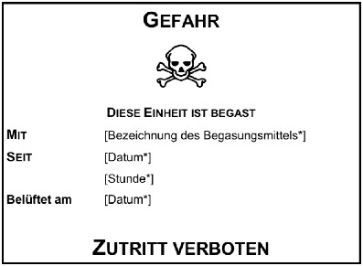

(Fundstelle: BGBl. I 2010, 1660 - 1673;
bzgl. der einzelnen Änderungen vgl. Fußnote)
Inhaltsübersicht
| Nummer 1 | Brand- und Explosionsgefährdungen |
| Nummer 2 | Partikelförmige Gefahrstoffe |
| Nummer 3 | Asbest |
| Nummer 4 | Biozid-Produkte und Begasung mit Biozid-Produkten oder Pflanzenschutzmitteln |
| Nummer 5 | Ammoniumnitrat |
Nummer 1
Brand- und Explosionsgefährdungen
1.1 Anwendungsbereich
Nummer 1 gilt für Maßnahmen nach § 12 bei Tätigkeiten mit Gefahrstoffen, die zu Brand- und Explosionsgefährdungen führen können.
1.2 Grundlegende Anforderungen zum Schutz vor Brand- und Explosionsgefährdungen
(1) Der Arbeitgeber hat auf der Grundlage der Gefährdungsbeurteilung nach § 6 die organisatorischen und technischen Schutzmaßnahmen nach dem Stand der Technik festzulegen, die zum Schutz von Gesundheit und Sicherheit der Beschäftigten oder anderer Personen vor Brand- und Explosionsgefährdungen erforderlich sind.
(2) Die Mengen an Gefahrstoffen sind im Hinblick auf die Brandbelastung, die Brandausbreitung und Explosionsgefährdungen so zu begrenzen, dass die Gefährdung durch Brände und Explosionen so gering wie möglich ist.
(3) Zum Schutz gegen das unbeabsichtigte Freisetzen von Gefahrstoffen, die zu Brand- oder Explosionsgefährdungen führen können, sind geeignete Maßnahmen zu ergreifen. Insbesondere müssen
- 1.
Gefahrstoffe in Arbeitsmitteln und Anlagen sicher zurückgehalten werden und Zustände wie gefährliche Temperaturen, Über- und Unterdrücke, Überfüllungen, Korrosionen sowie andere gefährliche Zustände vermieden werden,
- 2.
Gefahrstoffströme von einem schnell und ungehindert erreichbaren Ort aus durch Stillsetzen der Förderung unterbrochen werden können,
- 3.
gefährliche Vermischungen von Gefahrstoffen vermieden werden.
Soweit nach der Gefährdungsbeurteilung erforderlich, müssen Gefahrstoffströme automatisch begrenzt oder unterbrochen werden können.
(4) Frei werdende Gefahrstoffe, die zu Brand- oder Explosionsgefährdungen führen können, sind an ihrer Austritts- oder Entstehungsstelle gefahrlos zu beseitigen, soweit dies nach dem Stand der Technik möglich ist. Ausgetretene flüssige Gefahrstoffe sind aufzufangen. Flüssigkeitslachen und Staubablagerungen sind gefahrlos zu beseitigen.
1.3 Schutzmaßnahmen in Arbeitsbereichen mit Brand- und Explosionsgefährdungen
(1) Arbeitsbereiche mit Brand- oder Explosionsgefährdungen sind
- 1.
mit Flucht- und Rettungswegen sowie Ausgängen in ausreichender Zahl so auszustatten, dass die Beschäftigten die Arbeitsbereiche im Gefahrenfall schnell, ungehindert und sicher verlassen und Verunglückte jederzeit gerettet werden können,
- 2.
so zu gestalten und auszulegen, dass die Übertragung von Bränden und Explosionen sowie die Auswirkungen von Bränden und Explosionen auf benachbarte Bereiche vermieden werden,
- 3.
mit ausreichenden Feuerlöscheinrichtungen auszustatten; die Feuerlöscheinrichtungen müssen, sofern sie nicht selbsttätig wirken, gekennzeichnet, leicht zugänglich und leicht zu handhaben sein,
- 4.
mit Angriffswegen zur Brandbekämpfung zu versehen, die so angelegt und gekennzeichnet sind, dass sie mit Lösch- und Arbeitsgeräten schnell und ungehindert zu erreichen sind.
(2) In Arbeitsbereichen mit Brand- oder Explosionsgefährdungen sind das Rauchen und das Verwenden von offenem Feuer und offenem Licht zu verbieten. Unbefugten ist das Betreten von Bereichen mit Brand- oder Explosionsgefährdungen zu verbieten. Auf die Verbote muss deutlich erkennbar und dauerhaft hingewiesen werden.
(3) Durch geeignete Maßnahmen ist zu gewährleisten, dass Personen im Gefahrenfall rechtzeitig, angemessen, leicht wahrnehmbar und unmissverständlich gewarnt werden können.
(4) Soweit nach der Gefährdungsbeurteilung erforderlich,
- 1.
muss es bei Energieausfall möglich sein, die Geräte und Schutzsysteme unabhängig vom übrigen Betriebssystem in einem sicheren Betriebszustand zu halten,
- 2.
müssen im Automatikbetrieb laufende Geräte und Schutzsysteme, die vom bestimmungsgemäßen Betrieb abweichen, unter sicheren Bedingungen von Hand abgeschaltet werden können und
- 3.
müssen gespeicherte Energien beim Betätigen der Notabschalteinrichtungen so schnell und sicher wie möglich abgebaut oder isoliert werden.
1.4 Organisatorische Maßnahmen
(1) Der Arbeitgeber darf Tätigkeiten mit Gefahrstoffen, die zu Brand- oder Explosionsgefährdungen führen können, nur zuverlässigen, mit den Tätigkeiten, den dabei auftretenden Gefährdungen und den erforderlichen Schutzmaßnahmen vertrauten und entsprechend unterwiesenen Beschäftigten übertragen.
(2) In Arbeitsbereichen mit Gefahrstoffen, die zu Brand- oder Explosionsgefährdungen führen können, ist bei besonders gefährlichen Tätigkeiten und bei Tätigkeiten, die durch eine Wechselwirkung mit anderen Tätigkeiten Gefährdungen verursachen können, ein Arbeitsfreigabesystem mit besonderen schriftlichen Anweisungen des Arbeitgebers anzuwenden. Die Arbeitsfreigabe ist vor Beginn der Tätigkeiten von einer hierfür verantwortlichen Person zu erteilen.
(3) Werden in Arbeitsbereichen, in denen Tätigkeiten mit Gefahrstoffen ausgeübt werden, die zu Brand- oder Explosionsgefährdungen führen können, Beschäftigte tätig und kommt es dabei zu einer besonderen Gefährdung, sind zuverlässige, mit den Tätigkeiten, den dabei auftretenden Gefährdungen und den erforderlichen Schutzmaßnahmen vertraute Personen mit der Aufsichtsführung zu beauftragen. Die Aufsicht führende Person hat insbesondere dafür zu sorgen, dass
- 1.
mit den Tätigkeiten erst begonnen wird, wenn die in der Gefährdungsbeurteilung nach § 6 festgelegten Maßnahmen ergriffen sind und ihre Wirksamkeit nachgewiesen ist, und
- 2.
ein schnelles Verlassen des Arbeitsbereichs jederzeit möglich ist.
1.5 Schutzmaßnahmen für die Lagerung
(1) Gefahrstoffe dürfen nur an dafür geeigneten Orten und in geeigneten Einrichtungen gelagert werden. Sie dürfen nicht an oder in der Nähe von Orten gelagert werden, an denen dies zu einer Gefährdung der Beschäftigten oder anderer Personen führen kann.
(2) In Arbeitsräumen dürfen Gefahrstoffe nur gelagert werden, wenn die Lagerung mit dem Schutz der Beschäftigten vereinbar ist und in besonderen Einrichtungen erfolgt, die dem Stand der Technik entsprechen.
(3) Gefahrstoffe dürfen nicht zusammen gelagert werden, wenn dies zu einer Erhöhung der Brand- oder Explosionsgefährdung führen kann, insbesondere durch gefährliche Vermischungen, oder wenn die gelagerten Gefahrstoffe in gefährlicher Weise miteinander reagieren können. Gefahrstoffe dürfen ferner nicht zusammen gelagert werden, wenn dies bei einem Brand oder einer Explosion zu zusätzlichen Gefährdungen von Beschäftigten oder von anderen Personen führen kann.
(4) Bereiche, in denen brennbare Gefahrstoffe in solchen Mengen gelagert werden, dass eine erhöhte Brandgefährdung besteht, sind mit dem Warnzeichen „Warnung vor feuergefährlichen Stoffen oder hoher Temperatur“ nach Anhang II Nummer 3.2 der Richtlinie 92/58/EWG des Rates vom 24. Juni 1992 über Mindestvorschriften für die Sicherheits- und/oder Gesundheitsschutzkennzeichnung am Arbeitsplatz (Neunte Einzelrichtlinie im Sinne von Artikel 16 Absatz 1 der Richtlinie 89/391/EWG) (ABl. L 245 vom 26.8.1992, S. 23) zu kennzeichnen.
(5) Soweit nach der Gefährdungsbeurteilung erforderlich, sind zu Lagerorten von Gefahrstoffen Schutz- und Sicherheitsabstände einzuhalten. Dabei ist ein Sicherheitsabstand der erforderliche Abstand zwischen Lagerorten und zu schützenden Personen, ein Schutzabstand ist der erforderliche Abstand zum Schutz des Lagers gegen gefährliche Einwirkungen von außen.
1.6 Mindestvorschriften für den Explosionsschutz bei Tätigkeiten in Bereichen mit gefährlichen explosionsfähigen Gemischen
(1) Bei der Festlegung von Schutzmaßnahmen nach § 12 Absatz 2 Nummer 1 sind insbesondere Maßnahmen nach folgender Rangfolge zu ergreifen:
- 1.
es sind Stoffe und Gemische einzusetzen, die keine explosionsfähigen Gemische bilden können, soweit dies nach dem Stand der Technik möglich ist,
- 2.
ist dies nicht möglich, ist die Bildung von gefährlichen explosionsfähigen Gemischen zu verhindern oder einzuschränken, soweit dies nach dem Stand der Technik möglich ist,
- 3.
gefährliche explosionsfähige Gemische sind gefahrlos nach dem Stand der Technik zu beseitigen.
Soweit nach der Gefährdungsbeurteilung erforderlich, sind die Maßnahmen zur Vermeidung gefährlicher explosionsfähiger Gemische durch geeignete technische Einrichtungen zu überwachen.
(2) Kann nach Durchführung der Maßnahmen nach Absatz 1 die Bildung gefährlicher explosionsfähiger Gemische nicht sicher verhindert werden, hat der Arbeitgeber zu beurteilen
- 1.
die Wahrscheinlichkeit und die Dauer des Auftretens gefährlicher explosionsfähiger Gemische,
- 2.
die Wahrscheinlichkeit des Vorhandenseins, der Entstehung und des Wirksamwerdens von Zündquellen einschließlich elektrostatischer Entladungen und
- 3.
das Ausmaß der zu erwartenden Auswirkungen von Explosionen.
Treten bei explosionsfähigen Gemischen mehrere Arten von brennbaren Gasen, Dämpfen, Nebeln oder Stäuben gleichzeitig auf, so müssen die Schutzmaßnahmen auf die größte Gefährdung ausgerichtet sein.
(3) Kann das Auftreten gefährlicher explosionsfähiger Gemische nicht sicher verhindert werden, sind Schutzmaßnahmen zu ergreifen, um eine Zündung zu vermeiden. Für die Festlegung von Maßnahmen und die Auswahl der Arbeitsmittel kann der Arbeitgeber explosionsgefährdete Bereiche nach Nummer 1.7 in Zonen einteilen und entsprechende Zuordnungen nach Nummer 1.8 vornehmen.
(4) Kann eine Explosion nicht sicher verhindert werden, sind Maßnahmen des konstruktiven Explosionsschutzes zu ergreifen, um die Ausbreitung der Explosion zu begrenzen und die Auswirkungen der Explosion auf die Beschäftigten so gering wie möglich zu halten.
(5) Arbeitsbereiche, in denen gefährliche explosionsfähige Atmosphäre auftreten kann, sind an ihren Zugängen zu kennzeichnen mit dem Warnzeichen nach Anhang III der Richtlinie 1999/92/EG des Europäischen Parlaments und des Rates vom 16. Dezember 1999 über Mindestvorschriften zur Verbesserung des Gesundheitsschutzes und der Sicherheit der Arbeitnehmer, die durch explosionsfähige Atmosphären gefährdet werden können (Fünfzehnte Einzelrichtlinie im Sinne von Artikel 16 Absatz 1 der Richtlinie 89/391/EWG) (ABl. L 23 vom 28.1.2000, S. 57, L 134 vom 7.6.2000, S. 36), die durch die Richtlinie 2007/30/EG (ABl. L 165 vom 27.6.2007, S. 21) geändert worden ist.
1.7 Zoneneinteilung explosionsgefährdeter Bereiche
Zone 0
ist ein Bereich, in dem gefährliche explosionsfähige Atmosphäre als Gemisch aus Luft und brennbaren Gasen, Dämpfen oder Nebeln ständig, über lange Zeiträume oder häufig vorhanden ist.
Zone 1
ist ein Bereich, in dem sich im Normalbetrieb gelegentlich eine gefährliche explosionsfähige Atmosphäre als Gemisch aus Luft und brennbaren Gasen, Dämpfen oder Nebeln bilden kann.
Zone 2
ist ein Bereich, in dem im Normalbetrieb eine gefährliche explosionsfähige Atmosphäre als Gemisch aus Luft und brennbaren Gasen, Dämpfen oder Nebeln normalerweise nicht auftritt, und wenn doch, dann nur selten und für kurze Zeit.
Zone 20
ist ein Bereich, in dem gefährliche explosionsfähige Atmosphäre in Form einer Wolke aus brennbarem Staub, der in der Luft enthalten ist, ständig, über lange Zeiträume oder häufig vorhanden ist.
Zone 21
ist ein Bereich, in dem sich im Normalbetrieb gelegentlich eine gefährliche explosionsfähige Atmosphäre in Form einer Wolke aus in der Luft enthaltenem brennbaren Staub bilden kann.
Zone 22
ist ein Bereich, in dem im Normalbetrieb eine gefährliche explosionsfähige Atmosphäre in Form einer Wolke aus in der Luft enthaltenem brennbaren Staub normalerweise nicht auftritt, und wenn doch, dann nur selten und für kurze Zeit.
Als Normalbetrieb gilt der Zustand, in dem Anlagen innerhalb ihrer Auslegungsparameter verwendet werden. Im Zweifelsfall ist die strengere Zone zu wählen. Schichten, Ablagerungen und Aufhäufungen von brennbarem Staub sind wie jede andere Ursache, die zur Bildung einer gefährlichen explosionsfähigen Atmosphäre führen kann, zu berücksichtigen. Die Zoneneinteilung ist in der Dokumentation der Gefährdungsbeurteilung (Explosionsschutzdokument) zu dokumentieren.
1.8 Mindestvorschriften für Einrichtungen in explosionsgefährdeten Bereichen sowie für Einrichtungen in nichtexplosionsgefährdeten Bereichen, die für den Explosionsschutz in explosionsgefährdeten Bereichen von Bedeutung sind
(1) Arbeitsmittel einschließlich Anlagen und Geräte, Schutzsysteme und den dazugehörigen Verbindungsvorrichtungen dürfen nur in Betrieb genommen werden, wenn aus der Dokumentation der Gefährdungsbeurteilung hervorgeht, dass sie in explosionsgefährdeten Bereichen sicher verwendet werden können. Dies gilt auch für Arbeitsmittel und die dazugehörigen Verbindungsvorrichtungen, die nicht Geräte oder Schutzsysteme im Sinne der Richtlinie 2014/34/EU des Europäischen Parlaments und des Rates vom 26. Februar 2014 zur Harmonisierung der Rechtsvorschriften der Mitgliedstaaten für Geräte und Schutzsysteme zur bestimmungsgemäßen Verwendung in explosionsgefährdeten Bereichen (ABl. L 96 vom 29.3.2014, S. 309) sind, wenn ihre Verwendung in einer Einrichtung an sich eine potenzielle Zündquelle darstellt. Verbindungsvorrichtungen dürfen nicht verwechselt werden können; hierfür sind die erforderlichen Maßnahmen zu ergreifen.
(2) Sofern in der Gefährdungsbeurteilung nichts anderes vorgesehen ist, sind in explosionsgefährdeten Bereichen Geräte und Schutzsysteme entsprechend den Kategorien der Richtlinie 2014/34/EU auszuwählen.
(3) Insbesondere sind in explosionsgefährdeten Bereichen, die in Zonen eingeteilt sind, folgende Kategorien von Geräten zu verwenden:
- –
in Zone 0 oder Zone 20: Geräte der Kategorie 1,
- –
in Zone 1 oder Zone 21: Geräte der Kategorie 1 oder der Kategorie 2,
- –
in Zone 2 oder Zone 22: Geräte der Kategorie 1, der Kategorie 2 oder der Kategorie 3.
(4) Für explosionsgefährdete Bereiche, die nicht nach Nummer 1.7 in Zonen eingeteilt sind, sind die Maßnahmen auf der Grundlage der Gefährdungsbeurteilung festzulegen und durchzuführen. Dies gilt insbesondere für
- 1.
zeitlich und örtlich begrenzte Tätigkeiten, bei denen nur für die Dauer dieser Tätigkeiten mit dem Auftreten gefährlicher explosionsfähiger Atmosphäre gerechnet werden muss,
- 2.
An- und Abfahrprozesse in Anlagen, die nur sehr selten oder ausnahmsweise durchgeführt werden müssen und
- 3.
Errichtungs- oder Instandhaltungsarbeiten.
Nummer 2
Partikelförmige Gefahrstoffe
Nummer 2 gilt für Tätigkeiten mit Exposition gegenüber allen alveolengängigen und einatembaren Stäuben.
(1) Stäube, einschließlich Rauche, sind disperse Verteilungen fester Stoffe in der Luft, die insbesondere durch mechanische, thermische oder chemische Prozesse oder durch Aufwirbelung entstehen.
(2) Einatembar ist derjenige Anteil von Stäuben im Atembereich von Beschäftigten, der über die Atemwege aufgenommen werden kann. Alveolengängig ist derjenige Anteil von einatembaren Stäuben, der die Alveolen und Bronchiolen erreichen kann.
(3) (weggefallen)
- 2.3
Ergänzende Schutzmaßnahmen für Tätigkeiten mit Exposition gegenüber einatembaren Stäuben
(1) Die Gefährdungsbeurteilung nach § 6 bei Tätigkeiten mit Stoffen, Gemischen und Erzeugnissen, die Stäube freisetzen können, ist unter Beachtung ihres Staubungsverhaltens vorzunehmen.
(2) Bei Tätigkeiten mit Exposition gegenüber einatembaren Stäuben, für die kein stoffbezogener Arbeitsplatzgrenzwert festgelegt ist, sind die Schutzmaßnahmen entsprechend der Gefährdungsbeurteilung nach § 6 so festzulegen, dass mindestens die Arbeitsplatzgrenzwerte für den einatembaren Staubanteil und für den alveolengängigen Staubanteil eingehalten werden.
(3) Maschinen und Geräte sind so auszuwählen und zu betreiben, dass möglichst wenig Staub freigesetzt wird. Staub emittierende Anlagen, Maschinen und Geräte müssen mit einer wirksamen Absaugung versehen sein, soweit dies nach dem Stand der Technik möglich ist und die Staubfreisetzung nicht durch andere Maßnahmen verhindert wird.
(4) Bei Tätigkeiten mit Staubexposition ist eine Ausbreitung des Staubs auf unbelastete Arbeitsbereiche zu verhindern, soweit dies nach dem Stand der Technik möglich ist.
(5) Stäube sind an der Austritts- oder Entstehungsstelle möglichst vollständig zu erfassen und gefahrlos zu entsorgen. Die abgesaugte Luft ist so zu führen, dass so wenig Staub wie möglich in die Atemluft der Beschäftigten gelangt. Die abgesaugte Luft darf nur in den Arbeitsbereich zurückgeführt werden, wenn sie ausreichend gereinigt worden ist.
(6) Ablagerungen von Stäuben sind zu vermeiden. Ist dies nicht möglich, so sind die Staubablagerungen durch Feucht- oder Nassverfahren nach dem Stand der Technik oder durch saugende Verfahren unter Verwendung geeigneter Staubsauger oder Entstauber zu beseitigen. Das Reinigen des Arbeitsbereichs durch Kehren ohne Staub bindende Maßnahmen oder Abblasen von Staubablagerungen mit Druckluft ist grundsätzlich nicht zulässig.
(7) Einrichtungen zum Abscheiden, Erfassen und Niederschlagen von Stäuben müssen dem Stand der Technik entsprechen. Bei der ersten Inbetriebnahme dieser Einrichtungen ist deren ausreichende Wirksamkeit zu überprüfen. Die Einrichtungen sind mindestens jährlich auf ihre Funktionsfähigkeit zu prüfen, zu warten und gegebenenfalls in Stand zu setzen. Die niedergelegten Ergebnisse der Prüfungen nach den Sätzen 2 und 3 sind aufzubewahren.
(8) Für staubintensive Tätigkeiten sind geeignete organisatorische Maßnahmen zu ergreifen, um die Dauer der Exposition so weit wie möglich zu verkürzen. Ergibt die Gefährdungsbeurteilung nach § 6, dass die in Absatz 2 in Bezug genommenen Arbeitsplatzgrenzwerte nicht eingehalten werden können, hat der Arbeitgeber geeignete persönliche Schutzausrüstung, insbesondere zum Atemschutz, zur Verfügung zu stellen. Diese ist von den Beschäftigten zu tragen. Den Beschäftigten sind getrennte Aufbewahrungsmöglichkeiten für die Arbeitskleidung und für die Straßenkleidung sowie Waschräume zur Verfügung zu stellen.
Nummer 3
Asbest
Nummer 3 gilt ergänzend zu Nummer 2 für Tätigkeiten, bei denen Asbestfasern freigesetzt werden oder freigesetzt werden können.
Im Arbeitsplan nach § 11a Absatz 1 Nummer 6 hat der Arbeitgeber insbesondere Folgendes zu beschreiben:
- 1.
Arbeitsverfahren und verwendete Arbeitsmittel,
- 2.
technische, organisatorische und persönliche Schutzmaßnahmen,
- 3.
das Verfahren, nach dem überprüft wird, dass im Arbeitsbereich nach Abschluss der Tätigkeiten keine Gefährdung durch Asbest mehr besteht.
Bei Durchführung der Tätigkeiten mit einem anerkannten emissionsarmen Verfahren nach § 2 Absatz 4b kann die dem Verfahren zugrundeliegende Beschreibung den Arbeitsplan ersetzen.
(1) Bei der Festlegung und Umsetzung risikobezogener Schutzmaßnahmen nach § 11a Absatz 2 hat der Arbeitgeber sicherzustellen, dass
- 1.
die Schutzmaßnahmen geeignet sind, die Ausbreitung von asbesthaltigem Staub aus dem Arbeitsbereich zu verhindern; geeignete Schutzmaßnahmen sind insbesondere
- a)
staubdichte Abtrennung des Arbeitsbereichs,
- b)
Lüftungseinrichtung mit ausreichender Unterdruckhaltung,
- c)
Personenschleuse mit Dusche,
- d)
Materialschleuse,
- 2.
die erforderlichen Hygienemaßnahmen ergriffen und eingehalten werden,
- 3.
Arbeitsbereiche sowie Arbeitsmittel nach Abschluss der Tätigkeiten fachgerecht gereinigt werden; vor Freigabe der Arbeitsbereiche ist der Erfolg der Reinigung zu prüfen oder nachzuweisen.
(2) Der Arbeitgeber hat den Beschäftigten geeignete Atemschutzgeräte, Schutzanzüge und, soweit erforderlich, weitere persönliche Schutzausrüstung zur Verfügung zu stellen. Der Arbeitgeber hat sicherzustellen, dass die Beschäftigten die zur Verfügung gestellte persönliche Schutzausrüstung verwenden.
(3) Vor dem Rückbau von baulichen oder technischen Anlagen sind asbesthaltige Materialien zu entfernen, soweit dies möglich ist.
(1) Die Zulassung nach § 11a Absatz 3 wird erteilt, wenn
- 1.
der Arbeitgeber nachgewiesen hat, dass
- a)
die für die Tätigkeiten notwendige personelle und sicherheitstechnische Ausstattung gegeben ist und
- b)
die Einhaltung der einschlägigen Arbeitsschutzvorschriften gewährleistet ist und
- 2.
keine Bedenken gegen die Zuverlässigkeit des Arbeitgebers bestehen.
(2) Der Arbeitgeber hat dem Zulassungsantrag Folgendes beizufügen:
- 1.
eine Beschreibung der auszuführenden Tätigkeiten,
- 2.
den Nachweis, dass die sicherheitstechnische Ausstattung des Betriebs für die Tätigkeiten ausreichend und geeignet ist,
- 3.
die Angabe zu den sachkundigen Personen sowie die entsprechenden Sachkundenachweise,
- 4.
die Zahl der fachkundigen Beschäftigten, die Tätigkeiten mit Asbest durchführen sollen.
(1) Die Anzeige nach § 11a Absatz 4 erfolgt unternehmens- oder objektbezogen. Die Anzeige ist vor einer Änderung der Arbeitsbedingungen, die zu einer erheblichen Erhöhung der Exposition der Beschäftigten führen kann, erneut vorzunehmen. Der Anzeige ist die Dokumentation der Gefährdungsbeurteilung einschließlich des Arbeitsplans sowie der Nachweis der Qualifikation der verantwortlichen und aufsichtführenden Personen beizufügen.
(2) Tätigkeiten im Bereich niedrigen oder mittleren Risikos sind unternehmensbezogen anzuzeigen. In der unternehmensbezogenen Anzeige hat der Arbeitgeber anzugeben:
- 1.
Ort der Betriebsstätte,
- 2.
Art und Menge der asbesthaltigen Materialien, die gehandhabt werden,
- 3.
ausgeübte Tätigkeiten und angewendete Arbeitsverfahren,
- 4.
Angabe des Risikobereichs einschließlich der Art der Expositionsermittlung,
- 5.
Anzahl der fachkundigen Beschäftigten,
- 6.
Maßnahmen zur Begrenzung der Asbestexposition der Beschäftigten,
- 7.
Angaben zur verantwortlichen und aufsichtführenden Person.
Unternehmensbezogene Anzeigen sind spätestens nach sechs Jahren erneut vorzunehmen.
(3) Bei wechselnden Arbeitsstätten
- 1.
sind bei Tätigkeiten im Bereich mittleren Risikos ergänzend zur unternehmensbezogenen Anzeige der Ort der Arbeitsstätte sowie Beginn und Dauer der Tätigkeiten anzuzeigen oder
- 2.
ist bei Tätigkeiten im Bereich hohen Risikos eine objektbezogene Anzeige mit Angaben nach Absatz 2 erforderlich; ergänzend sind der Ort der Arbeitsstätte und Beginn und Dauer der Tätigkeiten anzuzeigen sowie eine Kopie der Zulassung nach § 11a Absatz 3 beizufügen.
Für anerkannte emissionsarme Verfahren kann in den nach § 20 Absatz 4 bekannt gegebenen Regeln zusätzlich festgelegt werden, dass ergänzend zur unternehmensbezogenen Anzeige der Ort der Arbeitsstätte sowie Beginn und Dauer der Tätigkeit anzuzeigen sind.
(1) Die Fachkunde nach § 11a Absatz 5 Nummer 3 umfasst die fachlichen Kenntnisse und Fertigkeiten, die erforderlich sind, um Tätigkeiten mit Asbest fachgerecht durchzuführen. Hinsichtlich Inhalt, Umfang und Bescheinigung der erforderlichen Fachkenntnisse sind die nach § 20 Absatz 4 bekannt gegebenen Regeln und Erkenntnisse zu berücksichtigen.
(2) Die spezifische praxisbezogene Fortbildungsmaßnahme für eine aufsichtführende Person nach § 11a Absatz 5 Satz 3 ist von einer Körperschaft des öffentlichen Rechts oder einem gewerkespezifischen Fachverband durchzuführen. Sie bedarf keiner behördlichen Anerkennung. Der Lehrgangsträger hat der zuständigen Behörde die Durchführung entsprechender Qualifizierungsmaßnahmen einmal vor Beginn des jeweils ersten Lehrgangs mitzuteilen. Die Qualifikationsmaßnahme umfasst keine abschließende Prüfung. Die Teilnahme wird durch einen Qualifikationsnachweis bescheinigt. Der Qualifikationsnachweis ist zeitlich nicht befristet.
(1) Der Nachweis der nach § 11a Absatz 5 erforderlichen Sachkunde wird erbracht durch die erfolgreiche Teilnahme an einem behördlich anerkannten Sachkundelehrgang.
(2) Der Sachkundelehrgang hat die Kenntnisse und Fähigkeiten zu vermitteln, die erforderlich sind, um die jeweiligen Aufgaben und Tätigkeiten sachgerecht durchführen zu können. Die Inhalte des Lehrgangs können gewerkespezifisch ausgerichtet werden. Teil des Lehrgangs ist eine theoretische Prüfung über dessen wesentliche Inhalte. Bei den Inhalten des Lehrgangs und der theoretischen Prüfung sind die Bekanntmachungen nach § 20 Absatz 4 zu berücksichtigen.
(3) Sachkundenachweise gelten für einen Zeitraum von sechs Jahren ab dem Datum des Nachweises. Wird während der Geltungsdauer des Sachkundenachweises ein behördlich anerkannter Fortbildungslehrgang besucht, verlängert sich die Geltungsdauer um jeweils sechs Jahre, gerechnet ab dem Datum des Nachweises über den Abschluss des Fortbildungslehrgangs.
(4) Die Anerkennung eines Sachkundelehrgangs gemäß Absatz 1 wird für einen Zeitraum von maximal sechs Jahren erteilt und kann mit Auflagen sowie mit dem Vorbehalt des Widerrufs erteilt werden. Auflagen können nachträglich angeordnet werden.
- 3.8
Übergangsfristen für Verbote für das Inverkehrbringen asbesthaltiger Zubereitungen und Erzeugnisse gemäß Abschnitt 2 des Anhangs zu § 1 der Chemikalien-Verbotsverordnung vom 14. Oktober 1993 (BGBl. I S. 1720)
Die Verbote galten bis zum 20. April 1994 nicht für Stoffe, Zubereitungen und Erzeugnisse, die vor dem 20. Oktober 1993 hergestellt worden sind. Dies galt nicht für:
- 1.
Fertigerzeugnisse in Pulverform, die im Einzelhandel öffentlich verkauft wurden,
- 2.
katalytische Siebe und Isoliervorrichtungen, die für mit Flüssiggas betriebene Heizgeräte bestimmt oder in solche Heizgeräte eingebaut waren,
- 3.
Anstrichstoffe,
- 4.
Stoffe und Zubereitungen zum Aufsprühen oder Aufspritzen,
- 5.
Krokydolith oder krokydolithhaltige Zubereitungen und Erzeugnisse.
Die Verbote galten bis zum 31. Dezember 1994 nicht für folgende chrysotilhaltige Zubereitungen und Erzeugnisse einschließlich der zu ihrer Herstellung benötigten Rohstoffe:
- 1.
Kanal- und Druckrohrleitungen für den Tiefbau, ausgenommen unbeschichtete Trinkwasserrohre,
- 2.
Brunnenrohre für die Entwässerung von Braunkohletagebauten,
- 3.
Kupplungsbeläge für Fahrzeuge und Bremsklotzsohlen für schienengebundene Fahrzeuge, soweit keine sicherheitstechnisch geeigneten asbestfreien Kupplungsbeläge oder verkehrsrechtlich zugelassenen asbestfreien Bremsklotzsohlen auf dem Markt angeboten wurden,
- 4.
duroplastische Formmassen zur Herstellung von Kommutatoren,
- 5.
statische Dichtungen, dynamische Dichtungen, Packungen und Zylinderkopfdichtungen für Fahrzeuge und gewerbliche Anwendung,
- 6.
Reibbeläge für gewerbliche Anwendungen.
Das Verbot erstreckte sich nicht auf natürlich vorkommende mineralische Rohstoffe, die freie Asbestfasern mit einem Massengehalt von nicht mehr als 0,1 Prozent enthielten.
Nummer 4
Biozid-Produkte und Begasung mit
Biozid-Produkten oder Pflanzenschutzmitteln
(1) Die Erlaubnis nach § 15d Absatz 1 wird erteilt, wenn
- 1.
der Arbeitgeber nachgewiesen hat, dass
- a)
die für die Tätigkeiten notwendige personelle und sicherheitstechnische Ausstattung gegeben ist,
- b)
die Einhaltung der einschlägigen Arbeitsschutzvorschriften gewährleistet ist und
- 2.
keine Bedenken gegen die Zuverlässigkeit des Arbeitgebers bestehen.
(2) Dem Erlaubnisantrag nach § 15d Absatz 1 Satz 2 hat der Arbeitgeber Folgendes beizufügen:
- 1.
eine Beschreibung der beabsichtigten Anwendungsbereiche von Begasungen,
- 2.
die Angabe der zu verwendenden Wirkstoffe,
- 3.
den Nachweis, dass die räumliche und sicherheitstechnische Ausstattung des Unternehmens für die geplanten Begasungen ausreichend und geeignet ist,
- 4.
Angaben zur Anzahl
- a)
der Beschäftigten, die die beabsichtigten Begasungen durchführen sollen,
- b)
der sachkundigen Personen,
- c)
der Befähigungsscheininhaber
und
- 5.
Kopien der Sachkundenachweise der sachkundigen Personen sowie der Befähigungsscheine der Befähigungsscheininhaber.
4.2.1 Unternehmensbezogene Anzeige
In der Anzeige nach § 15c Absatz 2 hat der Arbeitgeber anzugeben:
- 1.
den Namen des Antragstellers,
- 2.
die Anschrift der Betriebsstätte und
- 3.
Angaben
- a)
über die personelle, räumliche und sicherheitstechnische Ausstattung des Unternehmens und
- b)
zur Art und beabsichtigten Verwendung der Biozid-Produkte oder Biozid-Wirkstoffe.
4.2.2 Tätigkeitsbezogene Anzeige
In der Anzeige nach § 15d Absatz 3 hat der Arbeitgeber
- 1.
anzugeben
- a)
das Datum der Tätigkeiten, einschließlich der geplanten Arbeitsschritte und des voraussichtlichen Beginns und Endes der Tätigkeiten, sowie Zeitpunkte der Dichtheitsprüfung und Freigabe, soweit diese erforderlich sind,
- b)
die Bezeichnung und Zulassungs- oder Registriernummer des Biozid-Produkts oder des Pflanzenschutzmittels sowie dessen Einsatzmenge,
- c)
den Namen der verantwortlichen Person sowie, soweit erforderlich, weiterer Befähigungsscheininhaber
und
- 2.
vorzulegen
- a)
Kopien der Befähigungsscheine und
- b)
einen Lageplan des Ortes oder des zu begasenden Objekts.
Die Fachkunde nach § 15b Absatz 3 und § 15f Absatz 2 umfasst die fachlichen Kenntnisse und Fertigkeiten, die erforderlich sind, um die verwendeten Biozid-Produkte bestimmungsgemäß und fachgerecht verwenden zu können. Hinsichtlich des Inhalts und des Umfangs der Fachkunde sind die nach § 20 Absatz 4 bekanntgegebenen Regeln und Erkenntnisse zu berücksichtigen.
(1) Die erforderliche Sachkunde wird durch Vorlage einer Bescheinigung über die erfolgreiche Teilnahme an einem Sachkundelehrgang nachgewiesen. Der Sachkundelehrgang muss die Anforderungen der Absätze 3 und 4 erfüllen und von der zuständigen Behörde anerkannt sein. Die zuständige Behörde kann eine anderweitige Aus- oder Weiterbildung als gleichwertig mit einem Sachkundelehrgang anerkennen, wenn die erforderlichen praktischen und theoretischen Kenntnisse und Fertigkeiten im Sinne von Absatz 3 erworben wurden, um die jeweiligen Biozid-Produkte bestimmungsgemäß und sachgerecht verwenden zu können.
(2) Beschränkt sich die vorgesehene Verwendung der Biozid-Produkte auf bestimmte Anwendungsbereiche, so kann auch eine Sachkunde anerkannt werden, die auf diese Bereiche bezogen ist. Einer Sachkunde gleichgestellt sind
- 1.
Aus- und Weiterbildungsabschlüsse, die in einer Bekanntmachung nach § 20 Absatz 4 genannt sind hinsichtlich der dort genannten Anwendungsbereiche, sowie
- 2.
hinsichtlich der jeweiligen Bereiche der Schädlingsbekämpfung
- a)
Abschlüsse nach der Verordnung über die Berufsausbildung zum Schädlingsbekämpfer/zur Schädlingsbekämpferin vom 15. Juli 2004 (BGBl. I S. 1638),
- b)
Prüfungen nach der Verordnung über die Prüfung zum anerkannten Abschluss Geprüfter Schädlingsbekämpfer/Geprüfte Schädlingsbekämpferin vom 19. März 1984 (BGBl. I S. 468) und
- c)
Prüfungen zum Gehilfen oder Meister für Schädlingsbekämpfung nach nicht mehr geltendem Recht in der Bundesrepublik Deutschland oder nach dem Recht der Deutschen Demokratischen Republik.
(3) Der Sachkundelehrgang hat die erforderlichen praktischen und theoretischen Kenntnisse und Fertigkeiten zu vermitteln, um die jeweiligen Biozid-Produkte bestimmungsgemäß und sachgerecht verwenden zu können. In Abhängigkeit von Biozid-Produkt und Verwendungsart gehören hierzu die erforderlichen allgemeinen Grundkenntnisse der Toxikologie und Ökotoxikologie sowie:
- 1.
Kenntnisse der einschlägigen Rechtsvorschriften sowie der Bekanntmachungen nach § 20 Absatz 4,
- 2.
Kenntnisse über die Wirkungen der jeweiligen Biozid-Produkte auf die menschliche Gesundheit und die Umwelt,
- 3.
Kenntnisse über die Ermittlung und Einschätzung der Zielbereiche und Zieltierarten für den Einsatz von Biozid-Produkten,
- 4.
Kenntnisse und Fertigkeiten für einen nachhaltigen, risikominimierenden Einsatz der jeweiligen Biozid-Produkte,
- 5.
Kenntnisse über die Möglichkeiten, einem Befall vorzubeugen, und alternativer Verfahren zur Schädlingsbekämpfung und die entsprechenden Fertigkeiten,
- 6.
Kenntnisse und Fertigkeiten zur Dosierung und Ausbringung,
- 7.
Kenntnisse zur Erfolgs- und Wirksamkeitskontrolle und
- 8.
Kenntnisse zur fachgerechten Entsorgung.
(4) Teil des Lehrgangs ist eine theoretische und praktische Prüfung über die wesentlichen Inhalte des Sachkundelehrgangs. Dabei sind die Bekanntmachungen nach § 20 Absatz 4 zu berücksichtigen.
(5) Sachkundenachweise gelten für einen Zeitraum von sechs Jahren ab dem Datum des Nachweises. Die Geltungsdauer verlängert sich um jeweils sechs Jahre ab dem Datum der Erteilung eines Nachweises über den Abschluss eines behördlich anerkannten Fortbildungslehrgangs.
(1) Ein Befähigungsschein nach § 15d Absatz 4 kann von der zuständigen Behörde auf Antrag erteilt werden, wenn der Antragsteller
- 1.
mindestens 18 Jahre alt ist,
- 2.
über eine geeignete Berufsausbildung oder vergleichbare berufliche Qualifikation verfügt,
- 3.
die erforderliche Zuverlässigkeit besitzt,
- 4.
physisch und psychisch geeignet ist, nachgewiesen durch das Zeugnis eines Arztes nach § 7 Absatz 1 der Verordnung zur arbeitsmedizinischen Vorsorge; das Zeugnis darf zum Zeitpunkt des Antrags auf Ausstellung des Befähigungsscheins nicht älter als ein Jahr sein,
- 5.
eine mit der Tätigkeit verbundene spezifische Sachkunde durch die erfolgreiche Teilnahme an einem von der zuständigen Behörde anerkannten Sachkundelehrgang nachweist und
- 6.
die für die sichere Ausübung der Tätigkeit erforderlichen Sprachkenntnisse besitzt.
(2) Der Befähigungsschein wird für höchstens sechs Jahre erteilt. Die Geltungsdauer kann um jeweils sechs Jahre verlängert werden, wenn nachgewiesen wird, dass
- 1.
die in Absatz 1 genannten Voraussetzungen erfüllt sind und
- 2.
der Befähigungsscheininhaber vor Ablauf der Geltungsdauer einen Fortbildungslehrgang nach Nummer 4.4 Absatz 5 absolviert hat.
(3) Die zuständige Behörde kann die Geltungsdauer eines Befähigungsscheins um höchstens sechs Monate verlängern, wenn der Besuch eines behördlich anerkannten Fortbildungslehrgangs wegen unverhältnismäßiger Härte nicht rechtzeitig erfolgen kann.
(4) Der Befähigungsschein kann widerrufen werden, wenn die erforderlichen Voraussetzungen nach Absatz 1 nicht mehr erfüllt sind.
- 4.6
Kennzeichnung bei Begasungen von Räumen und Transporteinheiten
(1) Die Kennzeichnung nach § 15d Absatz 4 Satz 2 Nummer 2 Buchstabe b, § 15d Absatz 7 Nummer 2 und § 15g Absatz 2 Nummer 1 hat an den Zugängen begaster Räume und Transporteinheiten sowie an denen von Räumen oder Transporteinheiten, in denen Güter begast wurden, zu erfolgen. Dazu ist ein Hinweis anzubringen, dem Name und Telefonnummer der verantwortlichen Person zu entnehmen ist. Darüber hinaus sind die Zugänge mit einem Warnzeichen zu versehen. Das Warnzeichen muss rechteckig und die Mindestmaße von 400 mm in der Breite und 300 mm in der Höhe haben. Die Mindestbreite der Außenlinie muss 2 mm betragen. Die Aufschriften müssen schwarz auf weißem Grund sein und mindestens folgende Angaben enthalten:
- 1.
den Hinweis GEFAHR,
- 2.
das für das jeweilige Begasungsmittel zutreffende Gefahrensymbol (für akut toxische Gefahrstoffe der Kategorie 1 bis 3 der Totenkopf mit gekreuzten Knochen),
- 3.
die Aufschrift: DIESE EINHEIT IST BEGAST,
- 4.
die Bezeichnung des Begasungsmittels,
- 5.
das Datum und die Uhrzeit der Begasung,
- 6.
das Datum der Belüftung, sofern eine solche erfolgt ist, und
- 7.
die Aufschrift: ZUTRITT VERBOTEN.
(2) Das Warnzeichen ist entsprechend der folgenden Abbildung zu gestalten:
|  |
| * Die entsprechenden Angaben sind einzufügen. |
Nummer 5
Ammoniumnitrat
(1) Nummer 5 gilt für das Lagern, Abfüllen und innerbetriebliche Befördern von
- 1.
Ammoniumnitrat,
- 2.
ammoniumnitrathaltigen Gemischen.
(2) Nummer 5 gilt nicht für
- 1.
Gemische mit einem Massengehalt an Ammoniumnitrat bis zu 10 Prozent,
- 2.
Ammoniumnitrat und ammoniumnitrathaltige Gemische der Gruppen A und E in Mengen bis zu 100 Kilogramm,
- 3.
ammoniumnitrathaltige Gemische der Gruppen B, C und D in Mengen bis zu 1 Tonne,
- 4.
Ammoniumnitrat und ammoniumnitrathaltige Gemische, die auf Grund ihrer Eigenschaften dem Sprengstoffgesetz unterliegen.
Ammoniumnitrat und die Gemische werden in folgende Gruppen eingeteilt:
- 1.
Gruppe A:
Ammoniumnitrat und ammoniumnitrathaltige Gemische, die zur detonativen Reaktion fähig sind oder die nach Nummer 5.3 Absatz 7 Tabelle 1 hinsichtlich des Ammoniumnitratgehalts den Untergruppen A I, A II, A III oder A IV zugeordnet sind;
- 2.
Gruppe B:
ammoniumnitrathaltige Gemische die zur selbstunterhaltenden fortschreitenden thermischen Zersetzung fähig sind;
- 3.
Gruppe C:
ammoniumnitrathaltige Gemische, die weder zur selbstunterhaltenden fortschreitenden thermischen Zersetzung noch zur detonativen Reaktion fähig sind, jedoch beim Erhitzen Stickoxide entwickeln;
- 4.
Gruppe D:
ammoniumnitrathaltige Gemische, die in wässriger Lösung oder Suspension ungefährlich, in kristallisiertem Zustand unter Reduktion des ursprünglichen Wassergehalts jedoch zur detonativen Reaktion fähig sind;
- 5.
Gruppe E:
ammoniumnitrathaltige Gemische, die als Wasser-in-Öl-Emulsionen vorliegen und als Vorprodukte für die Herstellung von Sprengstoffen dienen.
- 5.3
Allgemeine Bestimmungen
(1) Für Ammoniumnitrat und ammoniumnitrathaltige Gemische der in Nummer 5.2 genannten Gruppen gilt Nummer 5.4.
(2) Ammoniumnitrat und ammoniumnitrathaltige Gemische der Gruppen A, B, C oder E müssen in ihren Bestandteilen fein verteilt und innig gemischt sein und dürfen sich während der Lagerung, Beförderung oder Abfüllung nicht entmischen.
(3) Ammoniumnitrathaltige Düngemittel in Abmischungen als Stickstoff-Kalium- oder Stickstoff-Phosphor-Kalium-Düngemittel (NK- oder NPK-Bulk Blends) müssen nach den Vorschriften der Gruppe B oder nur nach Maßgabe der festgestellten Gefährlichkeit gelagert werden. Werden bei der Abmischung Düngemittel der Gruppe A verwendet, muss die Lagerung nach den Vorschriften der Gruppe A oder ebenfalls nach Maßgabe der festgestellten Gefährlichkeit erfolgen.
(4) Als Ammoniumnitrat gelten alle Nitrationen, für die ein Äquivalent Ammoniumionen vorhanden ist.
(5) Der Massenanteil an verbrennlichen Bestandteilen ist bei ammoniumnitrathaltigen Gemischen der Untergruppe B II aus Absatz 7 Tabelle 1 unbeschränkt, bei Ammoniumnitrat und ammoniumnitrathaltigen Gemischen der Untergruppe A I nach Absatz 7 Tabelle 1 auf bis zu 0,2 Prozent und bei ammoniumnitrathaltigen Gemischen aller übrigen Untergruppen nach Absatz 7 Tabelle 1 der Gruppen A, B, C und D auf bis zu 0,4 Prozent beschränkt.
(6) Als verbrennlicher Bestandteil bei Ammoniumnitrat und ammoniumnitrathaltigen Gemischen der Untergruppe A I nach Absatz 7 Tabelle 1 gilt der Kohlenstoff, soweit es sich um organische Stoffe handelt.
(7) Inerte Stoffe im Sinne von Nummer 5 sind Stoffe, die die thermische Sensibilität und die Sensibilität gegen eine einwirkende Detonation nicht erhöhen. Im Zweifelsfall ist dies durch ein Gutachten der Bundesanstalt für Materialforschung und -prüfung nachzuweisen.
Tabelle 1
Rahmenzusammensetzungen und Grenzen für Ammoniumnitrat und
ammoniumnitrathaltige Gemische für die Zuordnung zu einer der Gruppen nach Nummer 5.2
Unter-
gruppen | Massenanteil an
Ammoniumnitrat
in Prozent (%) | Andere Bestandteile | Besondere Bestimmungen |
|---|
| A I | ≥ 90 | Chloridgehalt ≤ 0,02 %
Inerte Stoffe ≤ 10 % | Keine weiteren Ammoniumsalze sind erlaubt. |
| A II | > 80 bis < 90 | Kalkstein, Dolomit oder
Calciumcarbonat < 20 % | |
| A III | > 45 bis < 70 | Ammoniumsulfat | Inerte Stoffe sind erlaubt. |
| A IV | > 70 bis < 90 | Kaliumsalze, Phosphate in NP-, NK- oder NPK- Düngern, Sulfate in N-Düngern; inerte Stoffe | |
| B I | ≤ 70 | Kaliumsalze, Phosphate, inerte Stoffe und andere Ammoniumsalze in NK- oder NPK-Düngern | Bei einem Massenanteil von mehr als 45 % Ammoniumnitrat darf der Massenanteil von Ammoniumnitrat und anderen Ammoniumsalzen zusammen nicht mehr als 70 % betragen. |
| B II | ≤ 45 | Überschüssige Nitrate
≤ 10 % | Unbeschränkter Gehalt an verbrennlichen Bestandteilen; über den Gehalt an Ammoniumnitrat hinausgehende überschüssige Nitrate werden als Kaliumnitrat berechnet. |
| C I | ≤ 80 | Kalkstein, Dolomit oder
Calciumcarbonat ≥ 20 % | Kalkstein, Dolomit oder Calciumcarbonat mit minimaler Reinheit von 90 %. |
| C II | ≤ 70 | Inerte Stoffe | |
| C III | ≤ 45 | Phosphate und andere Ammoniumsalze in NP-Düngern | |
| > 45 bis < 70 | Phosphate und andere Ammoniumsalze in NP-Düngern | Der Massenanteil an Ammoniumnitrat und anderen Ammoniumsalzen darf zusammen 70 % nicht übersteigen. |
| C IV | ≤ 45 | Ammoniumsulfat | Inerte Stoffe sind erlaubt. |
| D I | ≤ 45 | Harnstoff, Wasser | In wässriger Lösung. |
| D II | ≤ 45 | Überschüssige Nitrate ≤ 10 %, Kaliumsalze, Phosphate und andere Ammoniumsalze in NP-, NK- oder NPK-Düngern; Wasser | In wässriger Lösung oder Suspension. Überschüssige Nitrate werden als Kaliumnitrat berechnet. Der Grenzgehalt aus Spalte 2 darf sowohl in der flüssigen als auch bei Suspensionen in der festen Phase nicht überschritten werden. |
| D III | ≤ 70 | Ammoniak, Wasser | In wässriger Lösung. |
| D IV | > 70 bis ≤ 93 | Wasser | In wässriger Lösung. |
| E | > 60 bis ≤ 85 | ≥ 5 % bis ≤ 30 % Wasser,
≥ 2 % bis ≤ 8 % verbrennliche Bestandteile, ≥ 0,5 % bis ≤ 4 % Emulgator | Anorganische Salze; Zusätze. |
(8) Ammoniumnitrat und ammoniumnitrathaltige Gemische, die den in Absatz 7 Tabelle 1 festgelegten Rahmenzusammensetzungen und Grenzen innerhalb der Gruppen A, B, C, D oder E nicht zuzuordnen sind oder den Voraussetzungen der Absätze 2 und 5 nicht entsprechen, dürfen nur nach Vorliegen eines Gutachtens der Bundesanstalt für Materialforschung und -prüfung über ihre Gefährlichkeit und nach Maßgabe der darin festgelegten Anforderungen gelagert, abgefüllt oder innerbetrieblich befördert werden.
(9) Ammoniumnitrathaltige Gemische der Gruppe B können nach den für die Gruppe C geltenden Vorschriften gelagert, abgefüllt oder innerbetrieblich befördert werden, wenn diese Zubereitungen nach einem Gutachten der Bundesanstalt für Materialforschung und -prüfung frei von den Gefahren einer selbstunterhaltenden fortschreitenden thermischen Zersetzung sind.
(10) Bei Zuordnung von Ammoniumnitrat und ammoniumnitrathaltigen Gemischen nach den Absätzen 3, 8 oder 9 ist die Kennzeichnung der Gruppe entsprechend dem Gutachten der Bundesanstalt für Materialforschung und -prüfung vorzunehmen.
- 5.4.1
Grundmaßnahmen bei der Lagerung von Stoffen und Gemischen der in Nummer 5.2 genannten Gruppen
Bei der Lagerung von Stoffen und Gemischen der Gruppen A, B, C, D und E sind folgende Schutzmaßnahmen zu ergreifen:
- 1.
Schutz gegen Witterungseinflüsse,
- 2.
Schutz gegen Verunreinigungen und gefährliche Zusammenlagerung,
- 3.
Schutz vor unbefugtem Zugang,
- 4.
Brandschutz,
- 5.
Schutz vor unzulässiger Beanspruchung.
- 5.4.2
Zusätzliche Maßnahmen für Stoffe und Gemische der Gruppen und Untergruppen A, D IV und E
- 5.4.2.1
Allgemeine Maßnahmen
(1) Ausgelaufene oder verschüttete Stoffe und Gemische und verunreinigte Stoffe und Zubereitungen müssen unmittelbar verbraucht oder gefahrlos beseitigt werden.
(2) Die Stoffe und Gemische der Gruppe A dürfen nur verpackt gelagert und befördert werden.
(3) Im Lagerraum oder in einem Umkreis von 10 Metern um den Ort der Lagerung von Stoffen und Gemischen der Gruppe A dürfen keine brennbaren Materialien gelagert werden.
(4) Gemische der Gruppen und Untergruppen D IV und E sind vor thermischer Zersetzung zu schützen.
- 5.4.2.2
Zusätzliche Maßnahmen für die Lagerung von Mengen über 1 Tonne
(1) Stoffe und Gemische der Gruppe A in Mengen von mehr als 1 Tonne dürfen nur in geeigneten Gebäuden mit entsprechenden Schutzmaßnahmen und nach dem Stand der Technik gelagert werden.
(2) Gemische der Gruppen und Untergruppen D IV und E in Mengen von mehr als 1 Tonne dürfen nur in geeigneten Lagerbehältern mit entsprechenden Schutzmaßnahmen und nach dem Stand der Technik gelagert werden.
(3) Die Stoffe und Gemische der Gruppe A und Gemische der Gruppe E sind vor der Lagerung in Teilmengen von bis zu 25 Tonnen zu unterteilen.
(4) Teilmengen bis zu 25 Tonnen von Stoffen und Gemischen der Gruppe A dürfen nur gelagert werden, wenn sie
- 1.
voneinander durch Wände aus Mauerziegeln oder Wandbausteinen ähnlicher Festigkeit oder aus Beton getrennt werden, deren Zwischenraum mit nicht brennbaren Stoffen voll ausgefüllt ist, und wenn die Wände einschließlich des Zwischenraums eine Mindestdicke d aufweisen, die sich aus der jeweils größten Teilmenge M nach folgender Beziehung errechnet:
d = 0,1 M1/3 mit d in „Meter“ und M in „Kilogramm“,
- 2.
in Fällen, in denen die Trennwände nicht bis zur Decke reichen, nur bis zu einer Höhe von 1 Meter unterhalb der Wandhöhe gelagert werden.
(5) Der Ort der Lagerung muss zu Gebäuden, die dem dauernden Aufenthalt von Menschen dienen, einen Mindestabstand (Schutzabstand) E haben, der sich aus der jeweils größten Teilmenge M nach folgender Beziehung errechnet:
E = 11 M1/3 mit E in „Meter“ und M in „Kilogramm“.
Für Betriebsgebäude gilt dies nur, wenn sie auch Wohnzwecken dienen.
(6) Der Schutzabstand zu öffentlichen Verkehrswegen beträgt zwei Drittel des Abstands nach Absatz 5.
(7) Abweichend von den Absätzen 5 und 6 beträgt für Lagermengen bis zu 3 Tonnen der Schutzabstand zu bewohnten Gebäuden und zu öffentlichen Verkehrswegen mindestens 50 Meter.
- 5.4.2.3
Zusätzliche Maßnahmen für die Lagerung von mehr als 25 Tonnen
(1) Wer beabsichtigt, Stoffe und Gemische der Gruppen und Untergruppen A, D IV und E in Mengen von mehr als 25 Tonnen zu lagern, hat dies spätestens zwei Wochen vorher der zuständigen Behörde schriftlich oder elektronisch anzuzeigen. Erfolgt die Anzeige elektronisch, kann die zuständige Behörde Mehrfertigungen sowie die Übermittlung der der Anzeige beizufügenden Unterlagen auch in schriftlicher Form verlangen.
(2) Die Anzeige muss folgende Angaben enthalten:
- 1.
Name und Anschrift des Anzeigepflichtigen,
- 2.
Art und Höchstmenge der zu lagernden Stoffe oder Gemische,
- 3.
eine Beschreibung der Bauart und Einrichtung des Lagers mit Grundrissen und Schnitten,
- 4.
einen Lageplan, aus dem die Lage zu Gebäuden und öffentlichen Verkehrswegen im Umkreis von 350 Metern ersichtlich ist,
- 5.
welche der im Lageplan nach Ziffer 4 eingezeichneten Gebäude zum dauernden Aufenthalt von Menschen oder zu Wohnzwecken dienen.
(3) Änderungen bezüglich der Angaben nach Absatz 2 sind vom Arbeitgeber der zuständigen Behörde unverzüglich anzuzeigen.
(4) In Lagergebäuden für Stoffe und Gemische der Gruppe A dürfen Räume nicht zum dauernden Aufenthalt von Personen, ausgenommen von Aufsichts- und Bedienungspersonal, dienen.
(5) Stoffe und Gemische der Gruppe A dürfen nur in eingeschossigen Gebäuden gelagert werden.
- 5.4.3
Zusätzliche Maßnahmen für Gemische der Gruppe B
- 5.4.3.1
Allgemeine Maßnahmen
Feuerstätten und sonstige Zündquellen dürfen in Lagerräumen nicht vorhanden sein.
- 5.4.3.2
Zusätzliche Maßnahmen für die Lagerung von mehr als 100 Tonnen
(1) Die Temperatur der Gemische darf bei der Einlagerung 70 Grad Celsius nicht überschreiten.
(2) Fördermittel und ihre baulichen Einrichtungen müssen so beschaffen sein oder so betrieben werden, dass entstehende Wärme keine Zersetzung des Lagerguts einleiten kann.
- 5.4.3.3
Zusätzliche Maßnahmen für unverpackte Gemische über 1 500 Tonnen oder für ausschließlich verpackte Gemische über 3 000 Tonnen
(1) Die Gemische sind in Teilmengen von jeweils höchstens 3 000 Tonnen zu unterteilen. Die Unterteilung kann durch feuerbeständige Zwischenwände, durch Haufwerke aus nicht brennbarem Lagergut oder durch einen jederzeit freizuhaltenden Zwischenraum von mindestens 2,50 Metern Breite vorgenommen werden. Reichen die Zwischenwände nicht bis zur Decke, so darf das Lagergut nur bis zu einer Höhe von 1 Meter unterhalb der Wandhöhe aufgeschüttet werden.
(2) Absatz 1 ist nicht anzuwenden, wenn gleichzeitig
- 1.
geeignete Löscheinrichtungen vorhanden sind,
- 2.
Löschwasser in ausreichender Menge zur Verfügung steht,
- 3.
eine jederzeit einsatzbereite Werkfeuerwehr vorhanden ist,
- 4.
das ins Lager gelangende Lagergut abgesiebt wird und
- 5.
die Luft im Lagerraum und in den unterhalb der Lagerfläche befindlichen Ausspeicherkanälen fortlaufend überwacht wird.
- 5.4.4
Sicherheitstechnische Maßnahmen für Gemische der Gruppe D
Die Gemische sind vor Austrocknung zu bewahren.
- 5.5
Erleichternde Bestimmungen
- 5.5.1
Erleichternde Bestimmungen für bestimmte Stoffe und Gemische
Stoffe und Gemische der Untergruppen A I und A II sowie Gemische mit inerten Stoffen der Untergruppe A IV und der Gruppe E können
- 1.
abweichend von Nummer 5.4.2.2 Absatz 3 in Teilmengen (Stapel) von höchstens 100 Tonnen unterteilt werden und
- 2.
abweichend von Nummer 5.4.2.2 Absatz 5 und 6 mit einem Schutzabstand, der der Hälfte des dort geforderten Werts entspricht, gelagert werden.
Voraussetzung hierfür ist der Nachweis durch ein Gutachten der Bundesanstalt für Materialforschung und -prüfung, dass die Stoffe und Zubereitungen der Untergruppen A I, A II und A IV die Beschaffenheitsanforderungen des Anhangs III der Verordnung (EG) Nr. 2003/2003 des Europäischen Parlaments und des Rates vom 13. Oktober 2003 über Düngemittel (ABl. L 304 vom 21.11.2003, S. 1), die zuletzt durch die Verordnung (EG) Nr. 1020/2009 (ABl. L 282 vom 29.10.2009, S. 7) geändert worden ist, erfüllen und Stoffe und Zubereitungen der Gruppe E nicht detonationsfähig sind.
- 5.5.2
Erleichternde Bestimmungen für ammoniumnitrat- und sprengstoffherstellende Betriebe
Für ammoniumnitrat- und sprengstoffherstellende Betriebe
- 1.
sind Nummer 5.4.2.1 Absatz 2 und Nummer 5.4.2.3 Absatz 1 bis 3 für Stoffe und Gemische der Gruppe A nicht anzuwenden;
- 2.
gilt ein um die Hälfte verminderter Schutzabstand nach Nummer 5.4.2.2 Absatz 5 und 6.
Ausnahmen nach § 19 Absatz 1 durch die zuständige Behörde von den in den in Nummer 5.4.2 genannten Maßnahmen für Stoffe und Gemische der Gruppen und Untergruppen A, D IV und E ergehen im Benehmen mit der Bundesanstalt für Materialforschung und -prüfung.